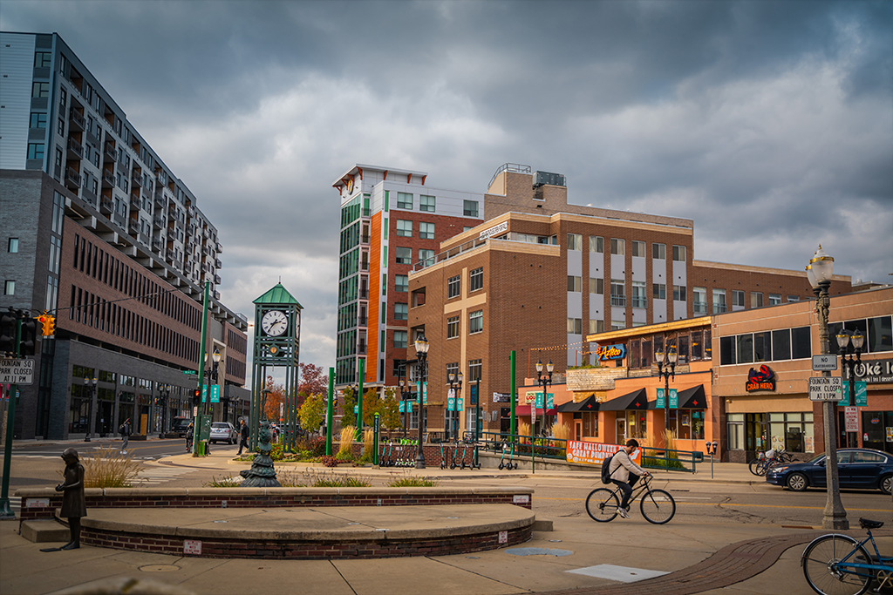

Life in East Lansing
Joey Griffin onThis school yeas has began with an incredible start, as many people have come back to live at MSU. East Lansing is bustling with life again and it is such a pleasure to see people walking around the city again. Throughout the day, buses and cars go by as people are on their way to class or work: and during the night, crowds walk through the city seeking some attraction. Often times, I see this as "Nature is Healing", people have finally returned to the college lifestyle and are enjoying every second of it. It's sweet, to see campus bustling with so many activities going on, and to see the active population taking part. With this positive start, I believe that the rest of this year will follow suit, with the spring semester finishing strong. Throughout this time, my schedule has become: wake up, go to class, come home, and then go out. It is truly an exhilirating experience, with so much to do, and tons and tons of new people to meet and hang out with. My only hope is that this kind of life can continue, even with some spikes in covid around the city and state. Nevertheless, I am enthralled to see East Lansing once alive again, returning to it's former pre-Covid glory.
